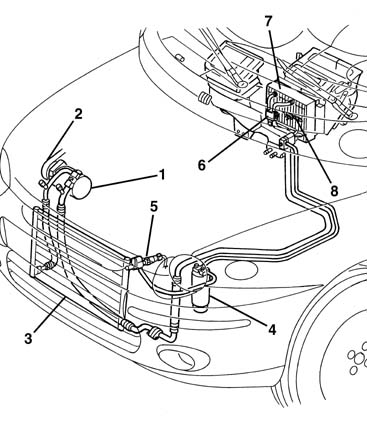
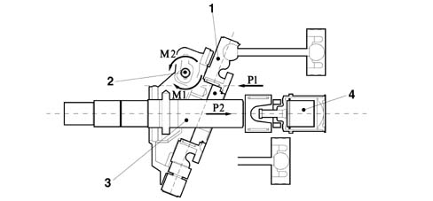
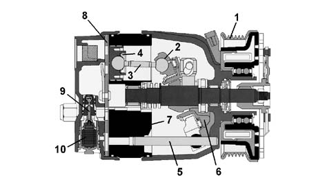
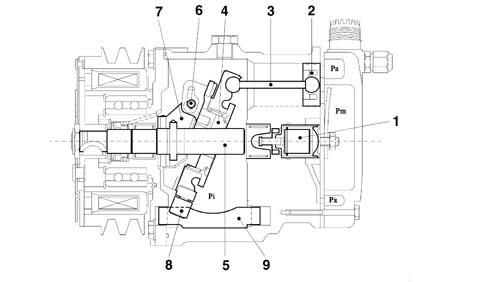
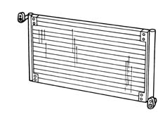
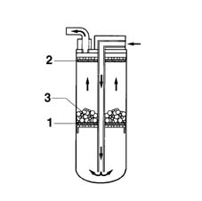
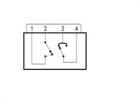
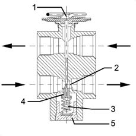
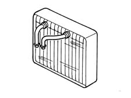
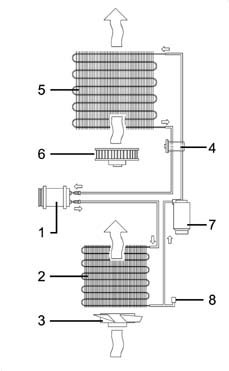

5040A air conditioner coolant circuit
- Path
- Descriptions > 50 AUXILIARY UNITS > 5040 AIR CONDITIONING CASING AND COMPONENTS > 5040A air conditioner coolant circuit
- Kind
- system description
- Applies to
- all engines; all production periods
- Interactive page
- https://sloeber94.github.io/elrnDB-fMltpl/en/#/2888279
Applies to: all engines; all production periods
The air conditioning system is designed to cool and dehumidify the air to be introduced into the passenger compartment.
Location of system components
-

1., Air conditioner compressor 2., Pulley with compressor electro-magnet coupling 3., Air conditioning condenser 4., Drier filter 5., 3 stage pressure switch 6., Expansion valve 7., Evaporator unit 8, Frost thermostat
Air conditioner compressor
Variable capacity compressors
Specifications
All versions are fitted with a variable capacity compressor.
This type of compressor has a special feature compared with traditional rotary type compressors; the electro-magnet coupling doe not have to be continuously switched on/off, with it consequently being subject to excessive stress, to allow the activation of the compressor.
In effect, the latter, always rotating, modifies its intervention by varying the capacity according to the air conditioning required (temperature decrease) as illustrated below.
The compressor varies its capacity following the variations in the system load conditions. - altered outside temperature and/or humidity conditions.
This solution also makes it possible to improve the protection of the evaporator, reducing the intervention of the frost thermostat.
Operation
The capacity is altered by changing the inclination of the connecting rod holder plate (1), achieved by varying the equilibrium of the presures and consequently the forces acting on the actual plate.
This equilibrium is modified through the opening of the diaphragm valve (4) according to the following logic:
- when the inlet pressure is high, the valve (4) remains closed; the reaction forces of the pistons P1 mainly act on the hinged (2) plate (1) causing a clockwise movement M1 applied to the plate hinge, which remains in the maximum inclination position;
- if the inlet pressure falls, the difference in pressure downstream of the diaphragm opens the valve (4): this gives rise to a pressure thrust on the shaft (3) which results in P2 which causes an anti-clockwise movement M2 which tends to rotate the plate (1) towards a more vertical position, i.e. a gradual reduction in the displacement.

1, connecting rod holder plate 2, pin 3, shaft 4, diaphragm valve
Applies to: engines: 1.6 16v; all production periods
Compressor
Composition
The compressor fitted on this version is he DELPHI V5 variable capacity type, shown diagramatically in the inset in the diagram above and consists of:
- a cylinder block/crankcase (7) which contains the liners/bores in which the pistons (4) slide;
- an assembly consisting of a shaft on which an inclined plane (6) is fitted on which a disc (2) guided by a pin (5) fixed to the five connecting rods (3) which operate the pistons (4) rotates on roller bearings;
- a cylinder head which contains the inlet and supply manifolds in addition to the seat for the adjustment valve (9) ;
- a plate (8), positioned between the cylinder block/crankcase and the cylinder head, which contains the inlet and supply valves:
- a pulley assembly with an electro-magnet coupling (1)
Operation
The alternating motion required for the sliding of the pistons in the bores/liners is produced by the rotary motion of the inclined plane (6), whilst the variation in capacity is a function of the piston stroke.
When there is a considerable request for air conditioning, the adjustment valve (9) is positioned in such a way that it uncovers an opening which places the inlet side in contact with the inside of the compressor; as, in this case, there is no difference in pressure, the compressor operates at maximum capacity corresponding to the position of the disc illustrated in the previous section.
When the request for air conditioning is less, the valve is positioned so that the supply section is in contact with the cylinder block/crankcase and, at the same time, it cancels the flow between the latter and the previously activated inlet side.l

1, Pulley with coupling 2, Disc 3, Connecting rod 4, Piston 5, Disc guide pin 6, Inclined plane 7, Cylinder block/crankcase 8, Valve holder plate 9, Regulating valvee 10, Valve control bellows
Applies to: engines: 1.9 JTD 8V; all production periods
Compressor
Specifications
The compressor fitted on these versions is the variable capacity SANDEN SD7V16 type.
The compressor varies its capacity starting from the maximum value (161.3 cm3/rev) which is gradually reduced (down to 10.4 cm3/rev) following the variations in the system load conditions. - altered outside temperature and/or humidity conditions of sharp variations in the engine load conditions.
This solution is, in effect, defined as "unlimited variable capacity".
The compressor is the alternating piston type: the variation in the capacity is achieved by titling the connecting rod holder plate with a consequent variation in the piston stroke: the movement of the plate is activated by an internal adjustment valve according to the balance of pressure upstream and downstream of the compressor. In particular, a low inlet pressure involves the shuttering of the compressor (reduced capacity), whilst a high pressure involves operation at maximum power (maximum capacity).
Operation
Compressor SD7V16 is shown schematically in the figure below: it consists of seven pistons (2) with connecting rods (3) fastened to connecting rod carrier plate (4). The rotary motion of the plate (4), fitted on the shaft (5) provides the alternating movement to the pistons.
A different plate angle allows the variation of the capacity: maximum inclination (as shown in the diagram) for maximum capacity; nil limit inclination (vertical position) for minimum capacity, virtually zero.
The rotation of the plate (4) takes place around the pin (6) hinged on the shaft (5) arm (7).
The movement of the plate (4) in relation to the shaft (5) takes place through suitable splining in a low resistance material.
The plate (4) slides underneath on a guide (9) through a slide (8) made from a low friction material.
The diaphragm valve (1) controls the flow rate according to the difference between the Pa (inlet pressure) and the Pi (pressure inside the compressor).
N.B.The solution adopted for this compressor is to keep the internal pressure Pi constant, with advantages in terms of ease of adjustment, quietness and smooth operation.

1, Diaphragm valve 2, Pistons 3, Connecting rods 4, Connecting rod holder plate 5, Shaft 6, Pin 7, Arm 8, Slide 9, Guide Pa, inlet pressure Pi, pressure inside the compressor Pm, supply pressure
Applies to: all engines; all production periods
Air conditioning condenser
The condenser is a heat exchanger located in front of the engine cooling radiator.
The refrigerant fluid, in a gaseous state, passes through the condenser coils and liquifies (at an average temperature of 60°C).
The outside of the condenser comes into contact with the air produced by the vehicle moving forwards. When the vehicle is stationary or in a traffic jam, the air is produced by the same fan used by the engine radiator.
An insufficient heat exchange in the condenser increases the pressure in the system and causes the incomplete condensation of the fluid with a considerable reduction in the efficiency of the system.

Drier filter
The drier filter is connected by a pipe to the evaporator inlet duct and filters the refrigerant fluid mainly in a gaseous state but partly also in a liquid state, plus the lubricant oil/anti-freeze.
Any small impurities which could obstruct the expansion valve are retained by two filter layers whilst the (dehydration) water is retained by molecular sieves or a chemical compound (SILICAGEL) to prevent any particles of moisture contained in the system from freezing in the expansion valve and stopping it from working.
For this reason all the system components must be stored in a dry place with the connectors sealed until the time of fitting.
In the lower part of the pipe, which is positioned inside the accumulator and is contact with the outlet connector, there is an opening to ensure the return of the lubricant oil/anti-freeze to the compressor. There is a metal gauze filter seal on the above mentioned pipe, by the opening for the oil.

1, Filtering layer 2, Filtering layer 3, SILICAGEL
3 stage pressure switch
A three stage pressure switch controls the safe and correct operation of the circuit.
The three pressure stages allow the compressor and the cooling fan to be switched on/off as follows:
- 1st level (below 2.5 bar approx): minimum pressure allowing the compressor to be switched on
- 2nd level (15 bar approx): pressure that requires the condenser cooling fan to be switched on
- 3rd level (beyond 28 bar approx): pressure too high and therefore dangerous for the entire system

Wiring diagram
pins 3-4 1st and 3rd levels
pins 1-2 2nd level
Expansion valve
The thermostatic expansion valve fitted on the evaporator inlet and outlet ducts has the task of regulating the flow and expasion (fall in pressure) of the R134a fluid before it enters the evaporator.
The automatic regulation of the passage section for the refrigerant fluid inside the expansion valve is carried out by a sensitive bulb which, according to the temperature of fluid, suitably adjusts the size of the opening acting on a special spring which moves a shutter and determines the extent of the expansion.
The increase in temperature at the evaporator outlet, measured by the sensitive bulb, causes the opening of the valve with a consequent increase in the flow rate of the fluid to the evaporator.
Conversely, at low temperatures, the flow rate is decreased.
The valve adjustment screw is calibrated in production and should not be tampered with: this would involve a decrease in the efficiency of the system.

1, Sensitive bulb 2, Passage 3, Spring 4, Shutter 5, Adjustment screw
Evaporator unit
The evporator is the second heat exchanger in the system and consists of an aluminium structure with fins which increase the heat exchange surface. It is located in the duct/distributor unit.
The evaporator inlet and outlet ducts are fixed to the assembly plates which constitute the heat exchange area. The evaporator is chemically treated to make it corrosion resistant.
It represents the system cooling element and can have (recirculation) air coming from the passenger compartment or air from the outside passing through it for the necessary exchange of air inside the passenger compartment.
The outside or recirculation air which passes through the evaporator is at a higher temperature than that of the refrigerant fluid, in a liquid tate at a low pressure and temperature, which it contains and this causes evaporation (always at low pressure).
At the same time, the air which comes into contact with the evaporator fins is cooled and dehumidified. The humidity which condenses on the evaporator fins is collected and discharged outside the vehicle.

The cooling circuit operates according to a common refrigerant cycle with FREON R134a fluid where all the changes of state (from liquid to gas and viceversa) are exploited to absorb and give off heat.
The operation of the system takes place at two pressure levels: the high pressure is maintained by the compressor, the low pressure by the expansion valve.
The refrigerant fluid comes out of the compressor in the form of gas at a high pressure and high temperature.
It then enters the condenser, undergoes refrigeration and comes out liquified.
The fluid then passes through the drier filter, which absorbs any particles of water, because the water present in the pipes could, on freezing, block the expansion valve, reducing the efficiency of the cycle.
In effect, in the next expansion valve, the pressure of the fluid is lowered and as a result so too is its temperature.
The fluid, still in a liquid state, enters the evaporator: evaporation removes heat from the air which enter the passenger compartment. In addition, when this air comes into contact with the cold walls of the evaporator it loses a high percentage of humidity and therefore enters the vehicle colder and less humid.
Lastly, the fluid returns to the compressor and the cycle begins again.

1, Compressor 2, Condenser 3, Fan motor 4, Expansion valve 5, Evaporator unit 6, Passenger compartment fan 7, Drier filter 8, 3 stage pressure switch